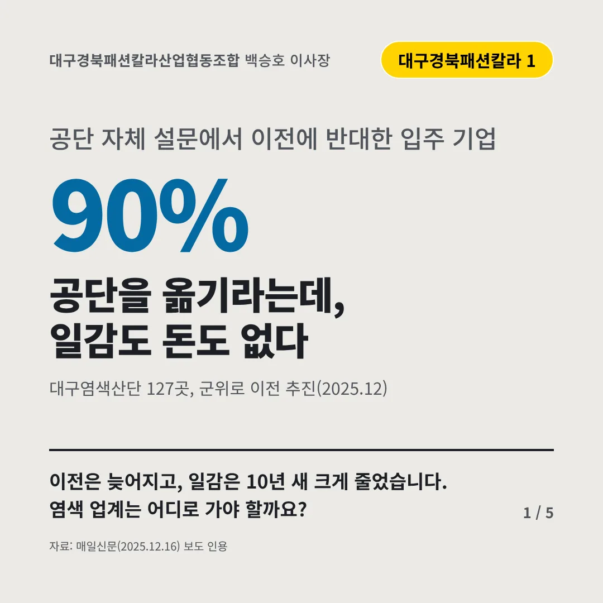
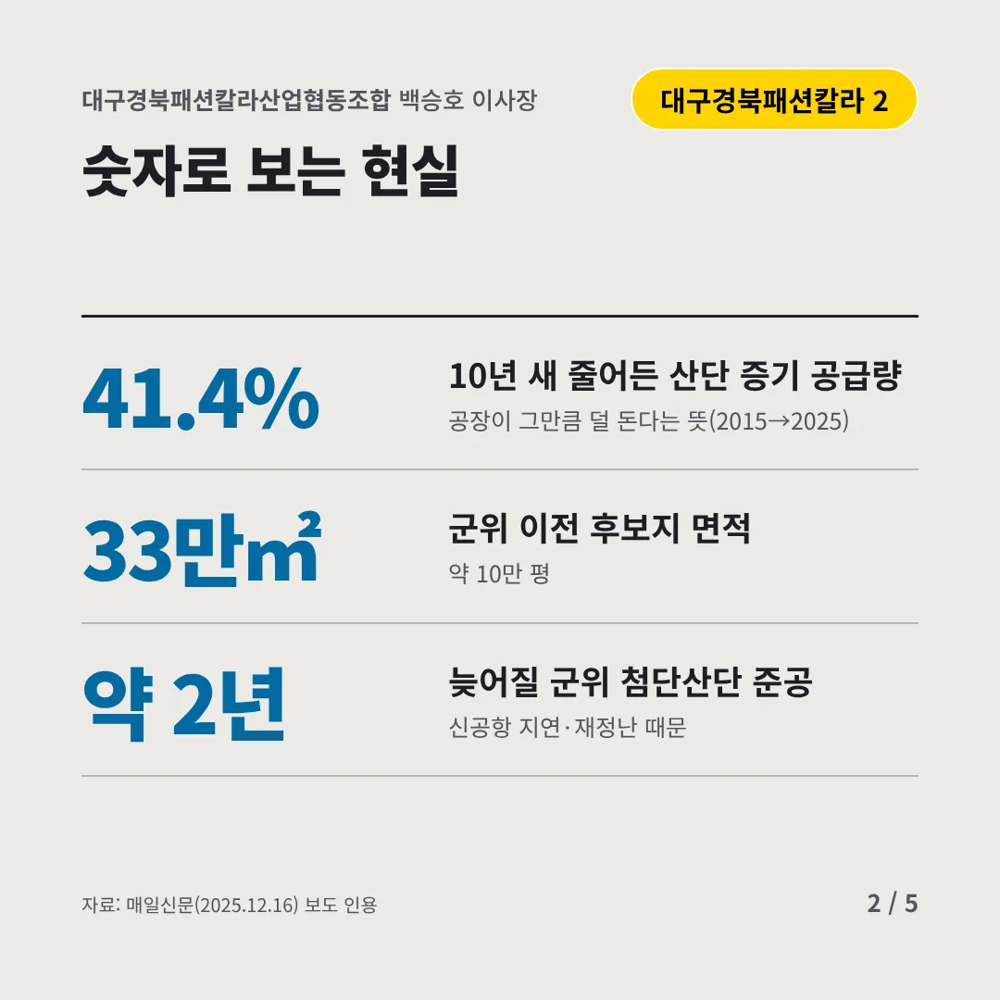
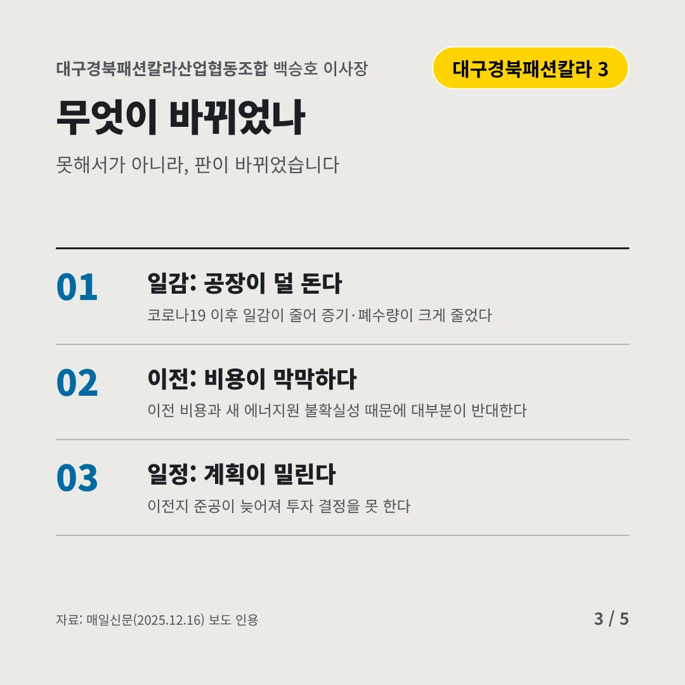
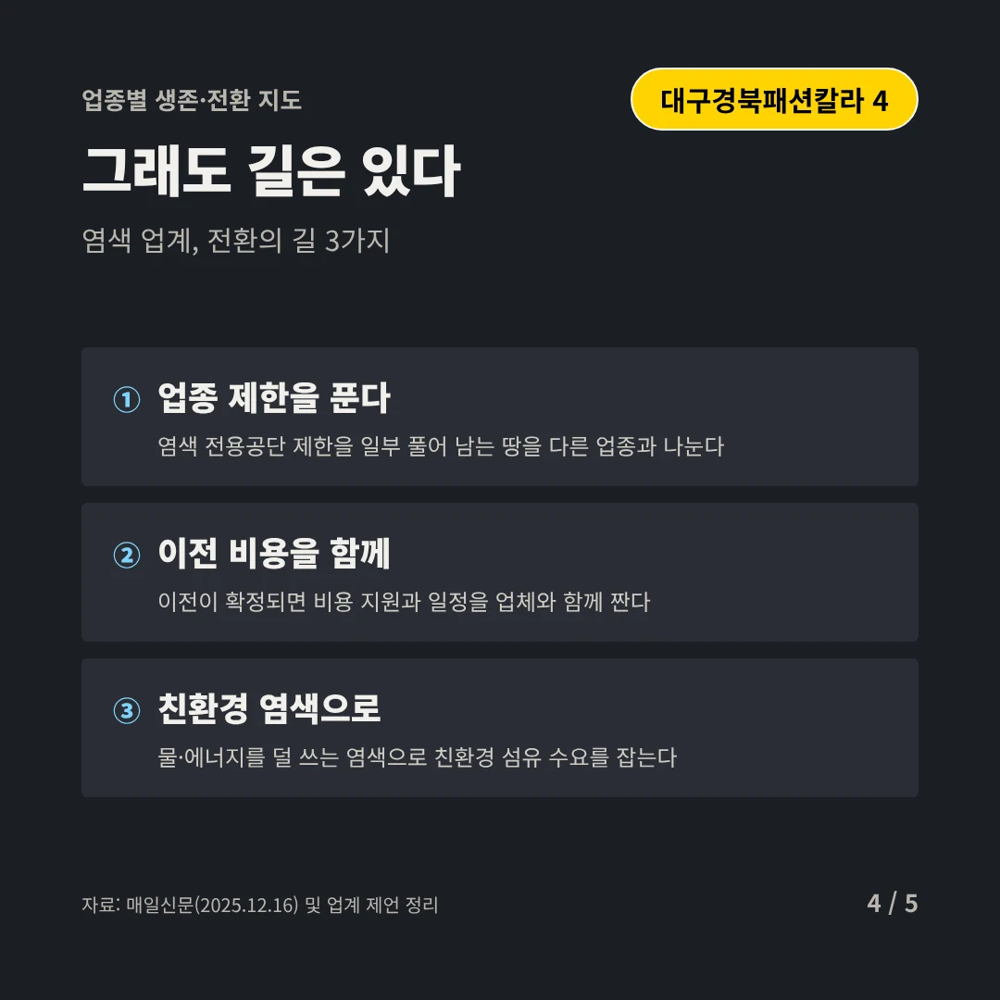
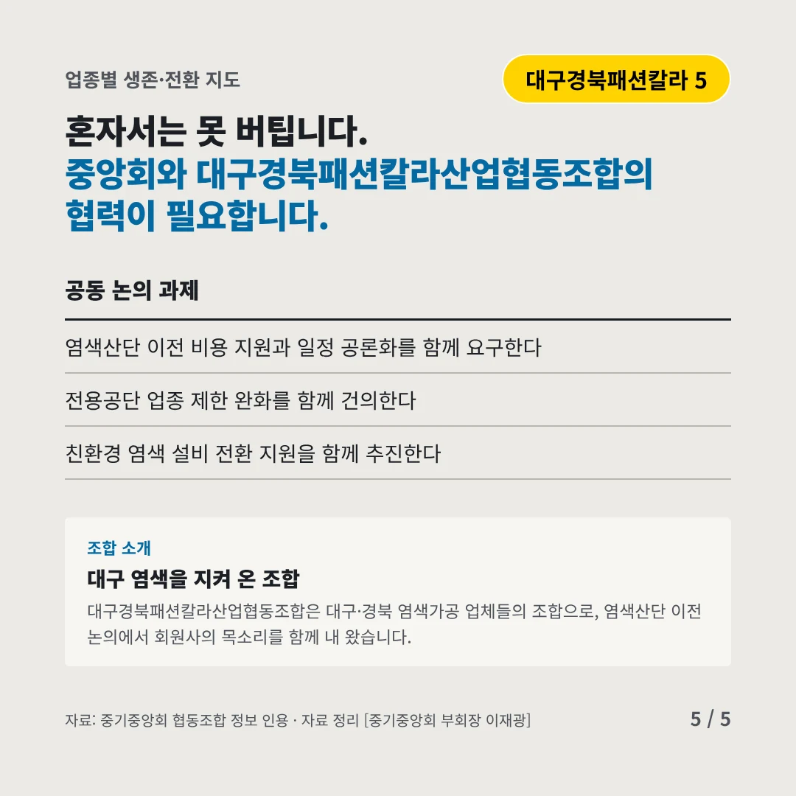
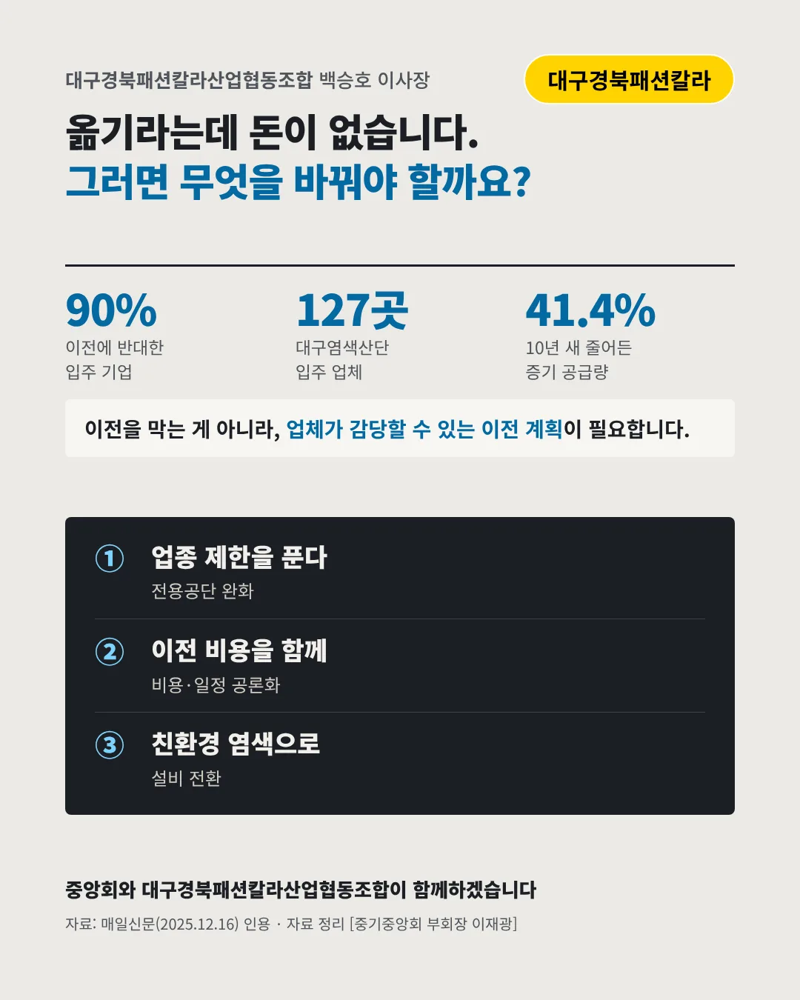

대구경북패션칼라산업협동조합
공단을 옮기라는데, 일감도 돈도 없다
90% 공단 자체 설문에서 이전에 반대한 입주 기업






이전은 늦어지고, 일감은 10년 새 크게 줄었습니다. 염색 업계는 어디로 가야 할까요?
숫자로 보는 현실
- 41.4%10년 새 줄어든 산단 증기 공급량공장이 그만큼 덜 돈다는 뜻(2015→2025)
- 33만㎡군위 이전 후보지 면적약 10만 평
- 약 2년늦어질 군위 첨단산단 준공신공항 지연·재정난 때문
무엇이 바뀌었나
- 일감: 공장이 덜 돈다코로나19 이후 일감이 줄어 증기·폐수량이 크게 줄었다
- 이전: 비용이 막막하다이전 비용과 새 에너지원 불확실성 때문에 대부분이 반대한다
- 일정: 계획이 밀린다이전지 준공이 늦어져 투자 결정을 못 한다
그래도 길은 있다
- 업종 제한을 푼다염색 전용공단 제한을 일부 풀어 남는 땅을 다른 업종과 나눈다
- 이전 비용을 함께이전이 확정되면 비용 지원과 일정을 업체와 함께 짠다
- 친환경 염색으로물·에너지를 덜 쓰는 염색으로 친환경 섬유 수요를 잡는다
한 장 요약

조합 소개
대구경북패션칼라산업협동조합은 대구·경북 염색가공 업체들의 조합으로, 염색산단 이전 논의에서 회원사의 목소리를 함께 내 왔습니다.
자료: 매일신문(2025.12.16)